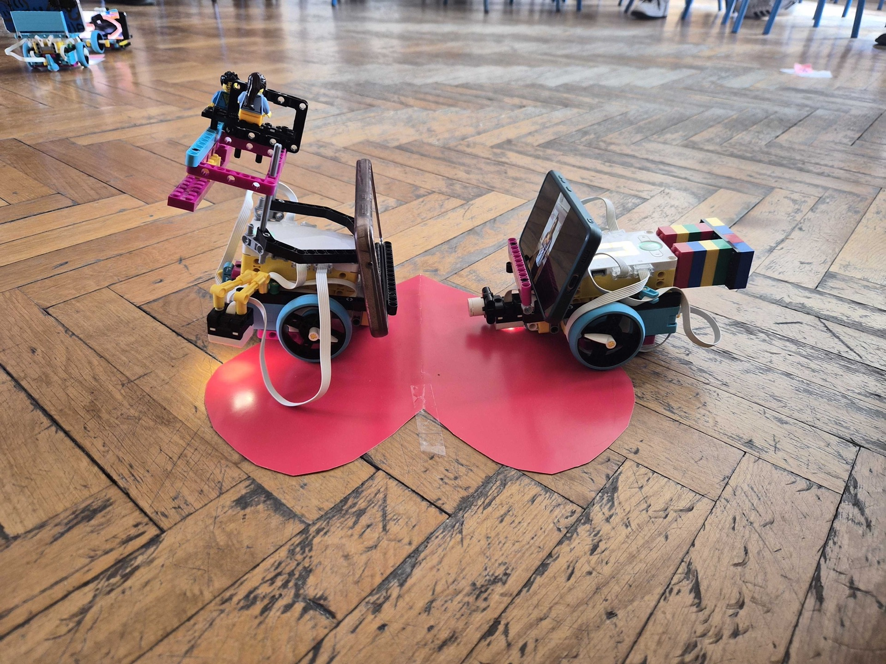

01
Algoritmi u praksi
Polaznici uče osnovne koncepte algoritama kroz konkretan projekt, ne samo teoriju.
Računalno razmišljanjeInterdisciplinarna radionica koja spaja kazalište, programiranje i robotiku. Polaznici grade, programiraju i izvode scene uz robote s izrazima lica i zvukom.


Projekt je inspiriran predstavom „Romeo i Julija", u kojoj se središnja tema vrti oko slanja algoritma ovog klasičnog djela u svemir. Nakon odgledane predstave, polaznici kroz programiranje postavljaju dio predstave uz robote opremljene ljudskim izrazima lica i zvukom.
Kroz ovu aktivnost polaznici unapređuju tehničke vještine i razvijaju razumijevanje kako tehnologija može interpretirati složene ideje kroz umjetnički izraz.
Jasno definirane kompetencije — kao u vodećim STEM i STEAM programima diljem svijeta.
Polaznici uče osnovne koncepte algoritama kroz konkretan projekt, ne samo teoriju.
Računalno razmišljanjeTehnologija postaje alat za interpretaciju i prijenos složenih umjetničkih djela.
STEAM pristupProgramiranje, robotika i scenski izraz razvijaju se kroz praktičan, timski rad.
Projektno učenjeProgram promiče pristup koji spaja humanističke i tehničke discipline.
InterdisciplinarnostStrukturirani program — od predstave do javne prezentacije rada.
Sudionici odgledaju predstavu „Romeo i Julija" i istražuju koncept slanja algoritma djela u svemir. Slijedi kratko predavanje o osnovama algoritama.
Polaznici koriste robote s izrazima lica i zvukom. Kroz programiranje postavljaju odabrane scene iz predstave na nov, tehnološki način.

Sudionici prezentiraju radove publici i demonstriraju kako su pomoću algoritama i robotike rekreirali dio predstave.
Inspiracija klasičnim djelom, učenje vještinama budućnosti.
Pogled u svijet u kojem se kod, roboti i kazalište susreću.